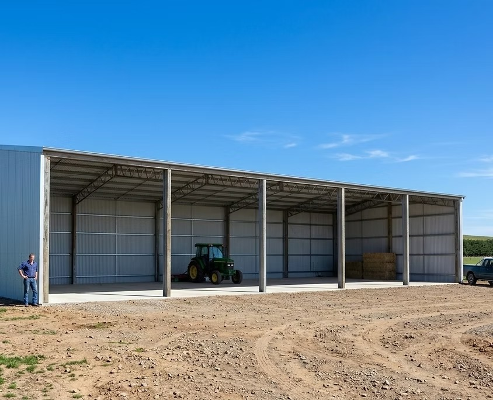

12mW x 24mL Hay & Machinery Shed Select this sizeSupply Only Kit Pathway
Shed kits for customers ready to manage the build.
For customers comparing practical kit options, inclusions, intended use and delivery location.
RECEIVE A QUOTE IN TWO HOURS
For standard shed kit enquiries submitted during business hours.
Who this is for
For simpler projects with capable hands already lined up.
A supply only kit suits customers who already know how the shed will be built. Bison can still help with a quality standard build option and practical quote information.
- You already have a builder or internal build capability
- Receive a quote in two hours for standard kit enquiries during business hours
- You can choose a standard build size, or note a different size if needed
- You want practical kit guidance without booking the wrong service type

The kit route is direct, but it still asks enough to avoid a vague quote.
Kit quote details
What Bison needs for a useful kit quote.
The more clearly you can choose the standard build, intended use and delivery location, the easier it is to prepare a practical response.
Shed typeHay, machinery, workshop, storage, rural, commercial or other use case.
Standard sizeSelect the closest standard build, or choose Other size if the shed needs different dimensions.
Delivery locationTown, postcode or property region for practical logistics.
TimeframeUrgent, three months, six months or early planning.
Supply only shed kits
Let kit buyers self-select early.
Kit buyers can move straight into a quote request with the practical details Bison needs for follow-up.
Clear next step
Request a Kit Quote gives supply only buyers a clear way to get started.
Simple content
Inclusions, suitable uses, delivery guidance and quality signals stay easy to scan.
Relevant form
Kit enquiries ask for standard build selection, delivery location, intended use and timeframe.
Supply only shed kits
Ready for a practical kit quote?
Choose the standard build, delivery location and timeframe so Bison can follow up with practical next steps.